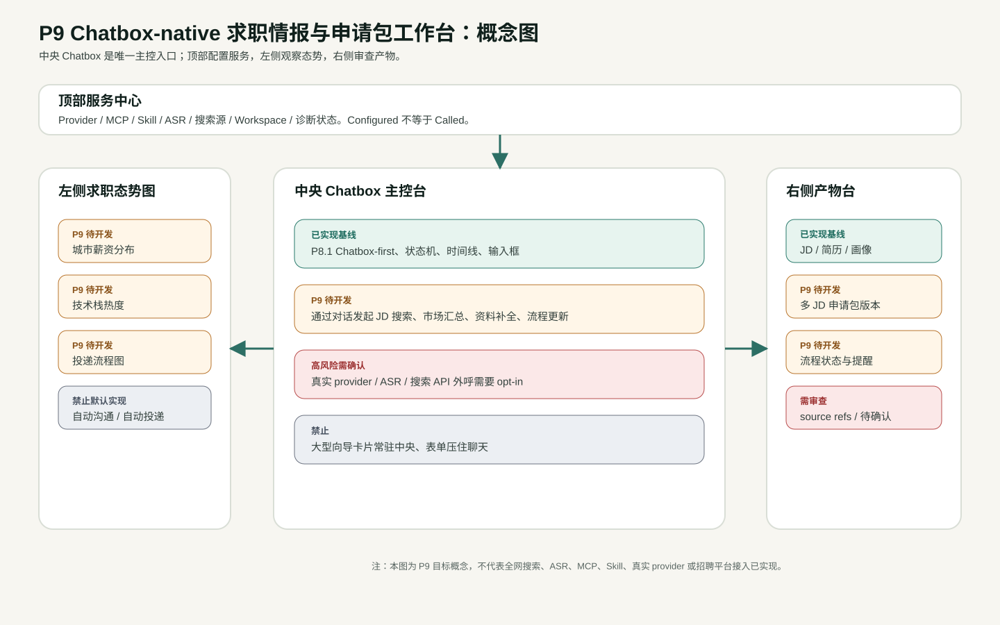
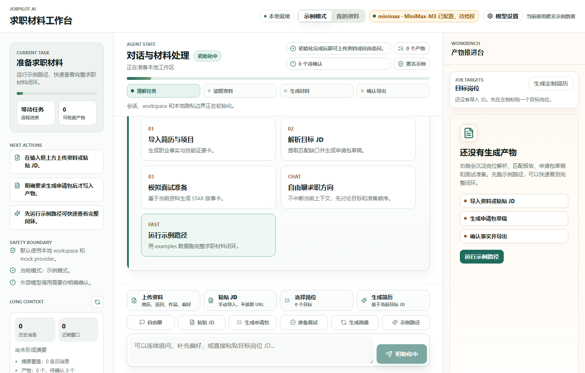
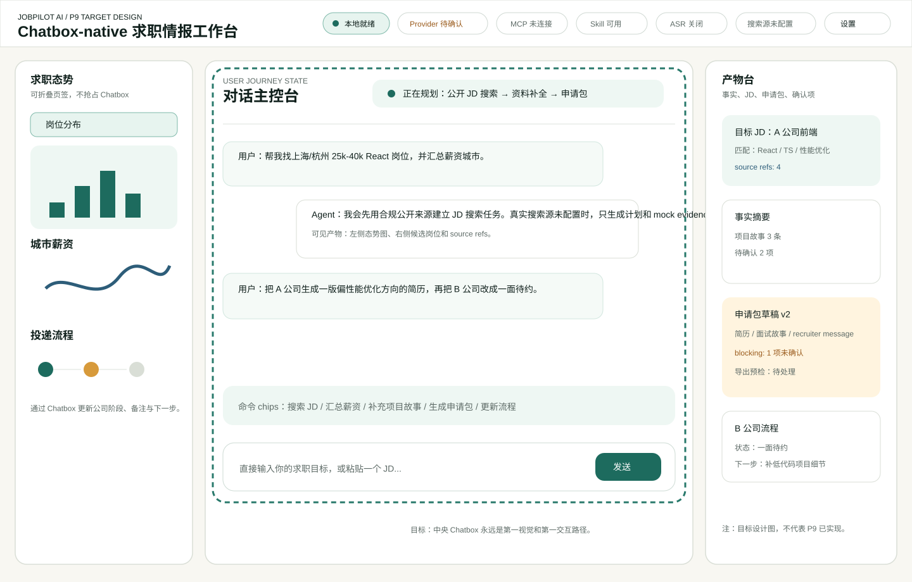
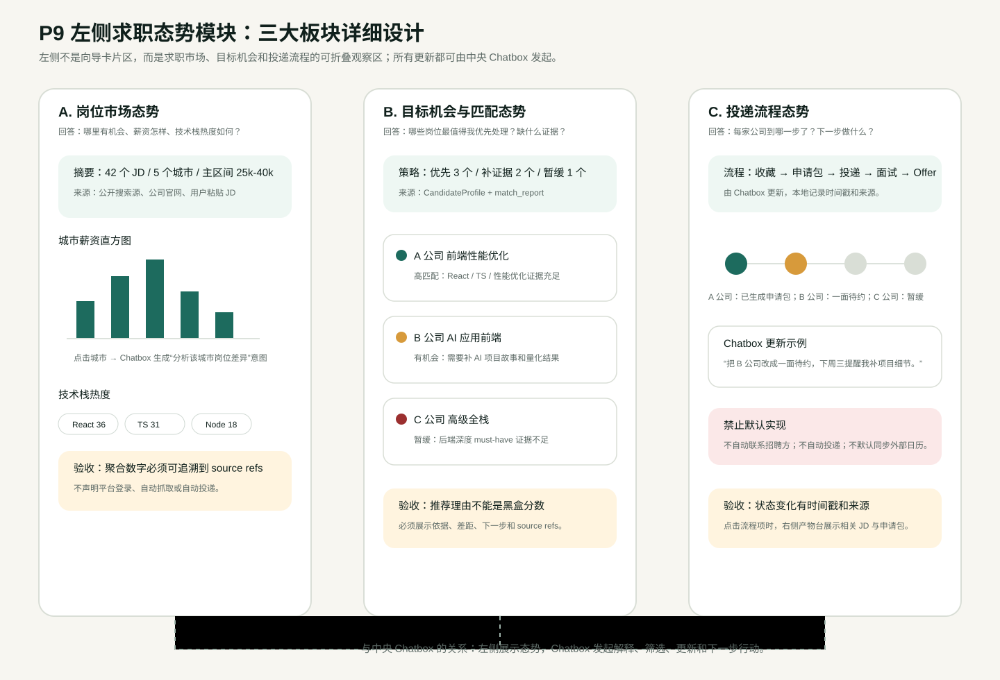
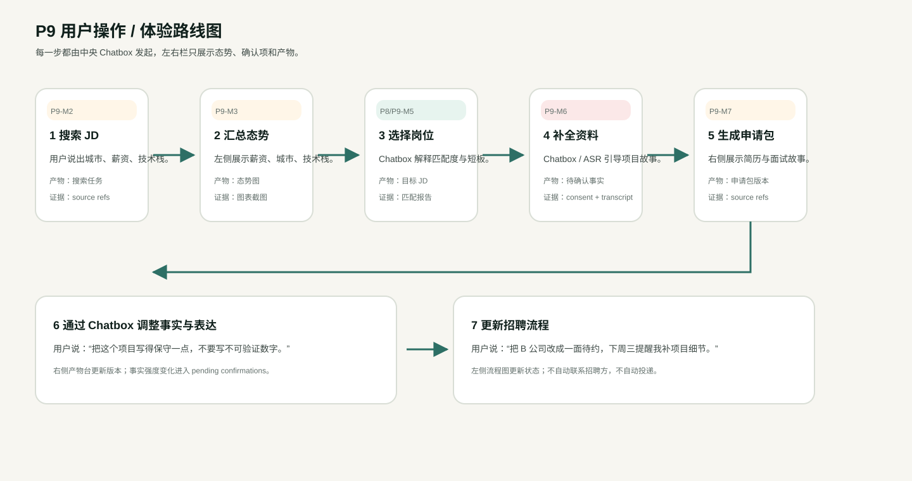

审查摘要
P9 文档设计阶段 当前基线：P8.1 自动化候选 不代表代码实现| 本页可以证明 | Agent 已把当前真实基线、目标体验、用户路线、验收证据和 false-green 边界放在同一个审查页面中。 |
|---|---|
| 本页不能证明 | 全网 JD 搜索、ASR、真实 provider、MCP、Skill、招聘平台接入、自动投递或 P9 前端代码已经实现。 |
| 核心设计判断 | 中央 Chatbox 是主控台；左侧是可折叠态势图；右侧是产物台；顶部是服务中心。大型向导卡片不再作为主体验。 |
概念图：四区职责与数据流

概念图为受控 SVG 原型资产，用颜色区分已实现基线、P9 待开发、高风险需确认和禁止默认实现。
当前实际实现基线截图

真实截图来自本地运行的当前项目页面，视口 1440x920。它证明当前已有三栏、Chatbox、输入区工具和右侧产物台；同时也能看到中央仍存在较强任务卡片区域。
P9 目标截图：Chatbox-native 工作台

目标图为受控 SVG 原型，不是已实现截图。它表达后续开发方向：顶部服务中心、左侧态势图、中央 Chatbox 主控、右侧产物台。
左侧求职态势模块：三大板块详细设计

左侧栏不是向导卡片区，而是岗位市场态势、目标机会与匹配态势、投递流程态势三类信息的可折叠观察区。详细说明见 09_LEFT_INTELLIGENCE_PANEL_DETAIL.md。
交互地图原型：图钉、拖动、放大与视角切换
这是文档审查用离线原型，不调用地图服务，不代表 MapLibre、Leaflet、ECharts 或招聘平台已经接入。后续代码阶段可替换为真实开源地图方案。
开源方案调研与交互验收
| 方案 | GitHub CLI 搜索结果 | 适合 P9 的部分 | 本轮处理 |
|---|---|---|---|
| MapLibre GL JS | maplibre/maplibre-gl-js | 真实交互地图、矢量瓦片、缩放拖动、图层管理。 | 生产候选；文档原型不引入。 |
| Leaflet + ECharts | wandergis/leaflet-echarts3 / gnijuohz/echarts-leaflet | 轻量地图底图叠加薪资柱、热力、迁移线和图钉。 | 生产候选；适合 P9-M4。 |
| Apache ECharts Geo | GitHub 上有多个地图统计 demo | 非瓦片地图、柱状图、热力图、关系图和统计面板。 | 适合离线聚合图。 |
| 内联 SVG + 原生 JS | 本轮审查页采用 | 离线可打开，可审查图钉、拖动、缩放和视角切换。 | 已用于当前 HTML 原型。 |
交互验收证据：evidence/interactive_map_review_report.html 与 evidence/interactive-map-review.png。详细调研见 10_OPEN_SOURCE_MAP_VISUALIZATION_RESEARCH.md。
用户操作 / 体验路线图

路线图覆盖搜索 JD、汇总态势、选择岗位、补全资料、生成申请包、调整事实、更新招聘流程。
当前实现 vs P9 目标
| 能力 | 当前实际实现 | P9 目标 | 审查结论 |
|---|---|---|---|
| 中央 Chatbox | 已是首屏主路径，但仍有任务卡片区。 | 只保留对话、状态机、输入框和轻量 command chips。 | 需修改体验结构 |
| JD 输入 | 支持手动粘贴 JD。 | 支持合规公开 JD 搜索、标准化和聚合。 | 待新增 |
| 左侧区域 | 任务指导、安全边界、长上下文摘要。 | 可折叠求职态势图：城市薪资、技术栈、流程状态。 | 待重构 |
| 右侧产物台 | 已有岗位、画像、简历和空态。 | 持续展示多 JD 申请包、事实摘要、流程状态、source refs。 | 保留并强化 |
| 顶部导航 | 展示本地状态、模型设置和模式。 | 展示 provider、MCP、Skill、ASR、搜索源、workspace、诊断。 | 待新增 |
| ASR | 只有文本实时提示相关接口基线。 | opt-in 语音采集项目故事，转写进入待确认。 | 高风险需确认 |
| 招聘平台 | 未接入。 | 仍不登录、不绕风控、不自动投递；仅合规公开来源。 | 禁止默认实现 |
新版 PRD 要点
Chatbox 主控
用户通过聊天发起搜索、汇总、补资料、生成申请包、调整事实和更新流程。
左侧态势图
分为岗位市场态势、目标机会与匹配态势、投递流程态势三大板块。
右侧产物台
展示简历、事实摘要、候选人画像、JD、申请包、source refs 和待确认项。
顶部服务中心
展示 provider、MCP、Skill、ASR、搜索源、workspace、诊断状态。
ASR opt-in
语音只作为资料采集入口，转写内容必须确认后才能成为事实。
公开 JD 搜索
仅允许合规公开来源，不登录平台，不绕反爬，不自动投递。
左侧三大板块规格表
| 板块 | 用户问题 | 主要内容 | 交互方式 | 验收门槛 |
|---|---|---|---|---|
| 岗位市场态势 | 哪里有机会，薪资怎样，技术栈热度如何？ | 岗位数、城市薪资直方图、技术栈热度、来源可信度、更新时间。 | 点击城市或技术栈后，由 Chatbox 解释差异或筛选 JD。 | 聚合数字必须能追溯到 source refs；不得声明平台登录或自动抓取。 |
| 目标机会与匹配态势 | 哪些岗位最值得优先处理，缺什么证据？ | 重点岗位、匹配摘要、薪资城市、关键差距、下一步。 | 设为重点、补证据、生成申请包；所有动作也可由 Chatbox 发起。 | 推荐理由必须来自 CandidateProfile、match_report 或 source refs。 |
| 投递流程态势 | 每家公司到哪一步了，下一步做什么？ | 公司、岗位、阶段、下一步、申请包版本、最近更新时间。 | 用户通过 Chatbox 更新阶段，例如“把 B 公司改成一面待约”。 | 状态变化有时间戳和来源；不得自动联系招聘方或自动投递。 |
AI 图像 / 原型图一致性审查
| 检查项 | 结果 | 说明 |
|---|---|---|
| 是否保留中央 Chatbox 主控 | 通过 | 概念图、目标图和路线图都以 Chatbox 为发起点。 |
| 是否包含顶部、左侧、中央、右侧四区 | 通过 | 目标图明确展示四区职责。 |
| 是否出现虚假实现文案 | 通过 | 图中未给出招聘平台接入、自动投递或真实 provider 验收通过结论。 |
| 是否偏离 JobPilot 项目概念 | 通过 | 所有图均围绕 JD、薪资、项目故事、申请包和投递流程。 |
| 是否仍然堆叠很多向导卡片 | 通过 | 目标图使用 Chatbox、轻量 chips、左侧图表和右侧产物台。 |
| 是否能指导自动化开发验收 | 通过 | 路线图和对照表给出后续可截图、可追踪的验收点。 |
后续端到端验收门槛
| 门槛 | 验收证据 | 打回条件 |
|---|---|---|
| Chatbox 主控 | 1440/1200/720/390 真实截图 | 中央仍被大型向导卡片压住。 |
| JD 搜索合规 | source connector evidence、source refs、搜索任务日志 | 登录平台、绕风控、自动抓取或自动投递。 |
| ASR opt-in | consent 截图、转写待确认、脱敏报告 | 未确认开启 ASR，或转写直接写入正式事实。 |
| 产物可对话修改 | 版本 diff、source refs、pending confirmations | 普通聊天静默覆盖正式简历。 |
| 服务中心 | provider/MCP/Skill/ASR/Search 状态截图 | 把 configured 写成 called。 |
审计文档入口
01_P9_PRD_DRAFT.md：新版 PRD 初稿。02_CURRENT_IMPLEMENTATION_BASELINE.md：当前实现基线与差距。03_FRONTEND_EXPERIENCE_SPEC.md：前端体验规格。04_USER_JOURNEY_AND_ACCEPTANCE.md：用户路线与验收。06_IMAGE_GENERATION_PROMPTS.md：imag2 提示词和图像审查规则。07_FALSE_GREEN_AND_RISK_GATES.md：防虚假验收门槛。08_CHATGPT_AUDIT_PROMPT.md：给 ChatGPT 的审计提示词。09_LEFT_INTELLIGENCE_PANEL_DETAIL.md：左侧求职态势三大板块详细设计。10_OPEN_SOURCE_MAP_VISUALIZATION_RESEARCH.md：GitHub CLI 开源地图与可视化方案调研。